<HTML><BODY>
<CENTER>
<TABLE WIDTH=640 BACKGROUND="header.gif">
<TR><TD HEIGHT=82>&nbsp &nbsp<A HREF="index.html"></A></TD></TR></TABLE>
</BODY></HTML><HTML>
  <HEAD>
   <TITLE>Pocket Hello Kitty Translated!</TITLE>
  </HEAD>
  <BODY BACKGROUND="stars.gif" bgproperties="fixed">
    <CENTER>
    <TABLE WIDTH=640 BACKGROUND="kitty.gif" BORDER=2px BORDERCOLOR="#669966">
<TR><TD><CENTER>
<HR>Thanks to Val of <A HREF="http://www.tinkerville.com">Tinkerville</A> for scanning in these instructions! <BR><HR><BR>
<TABLE WIDTH="450">
<TR><TD>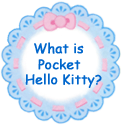</TD><TD>Pocket Hello Kitty is a game where you get to communicate with Kitty.  Walk as much as you can to accumulate steps so you can get all the various items!  Let's go searching for the many items in Kitty's Forest!  When you use the items, shake Pocket Hello Kitty and check the screen right away to see...</TD></TR>
</TABLE><BR><BR>

<BR><BR>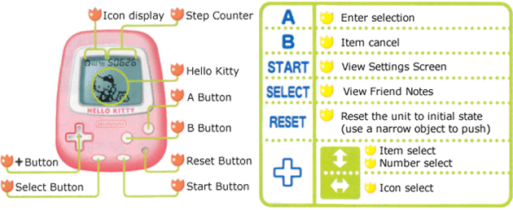
<BR><BR><BR></CENTER>
Remove the battery tab and the title screen will appear.<BR>
At the title screen, press the A button to access the clock screen.  Press the + button up and down to change the hour, then press A to set it.  Then set the minutes in the same way.  The game screen will the come up and Kitty will appear.</BR>
<CENTER><BR>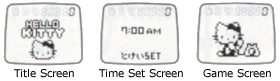<BR><BR></CENTER>
<FONT COLOR="#CC3399">Alert!
Pocket Hello Kitty has an energy saving function.  If you are not using any of the game functions (this applies to when you are walking too) the screen will automatically shut off.   When you want to turn it on again, press the A button and Kitty will appear right away!<BR></FONT><BR>
<BR><CENTER></CENTER>
The number of steps you take is shown in the top right hand corner of the game screen.  Accumulate as many steps as you can to collect 'kitts'.  When you have collected 25 kitts, you can enter Kitty's Forest.  Inside Kitty's Forest, you can find items and make friends.<BR>
<BR><BR><CENTER></CENTER>
<FONT COLOR="#FF9933">You can access the following screens by highlighting the icons in the top left corner of the screen and pressing the A button</FONT>
<BR><BR><CENTER><BR></CENTER>
<FONT COLOR="#009900">On this screen, you can set the time for the alarm to sound.</FONT><BR>
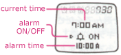When you highlight the  icon and press the A button, the alarm [the instruction booklet refers to the alarm as "whistle" screen, as shown the the right, will come up.  Press the A button to activate the cursor, then press A once more to turn the alarm on, and the alarm time will appear.  Use the + button to move the cursor to the alarm time and use the A button and + button to adjust the time.  Press A once more to set it. <BR><BR>
<CENTER><BR></CENTER>
<FONT COLOR="#009900">On this screen, you can use the items that you have found</FONT><BR>
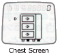The  icon will bring up the chest screen, as shown on the right.  Using the + button, press up and down to choose one of the 3 drawers.  Inside the drawers are items that you have picked up in Kitty's Forest.  Use the A button to open a drawer and a picture of the item will appear.  If you want to use the item, press A.  If you don't want to use the item, press B to cancel.<BR><BR>
<CENTER><BR></CENTER>
<FONT COLOR="#009900">On this screen, you can enter Kitty's Forest..</FONT><BR>
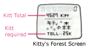Highlight the  icon and press A to display the Kitty's Forest screen as shown on the right.  If you have collected 25 kitt, you can enter Kitty's Forest.  Inside the forest are treasure chests that hold items.  In your search for these treasure chests, you must choose between many different paths.  When you come to a fork in the path, use the up and down of the + button to choose a direction to take.  The further into the forest you go, the better items there are to be found.  You might also find some friends who know the secret of the forest.<BR><BR>
<BR><CENTER><BR><BR>
</CENTER><BR>
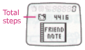When you press the select button, the Friend Notebook, as shown on the right, will appear.  Here you can see the record of all the friends you have met.<BR>
<BR> <FONT COLOR="#CC6699" SIZE=4><B>Let's meet friends!</B></FONT><BR><BR><CENTER>
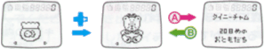<BR></CENTER>
A record is kept of all the friends you meet.  Use the + button to show each of your friends.  Pressing the A button will show you the information for the friend.<BR>
*On the friend information screen, you can see roughly how long you've known each friend.  For example, if you've known the friend for 10 - 19 days, the information will say "10th day".  20 - 29 days will be "20th day".  Over 100 days will be "100th day".<BR><BR>
<CENTER>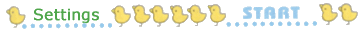</CENTER><BR>
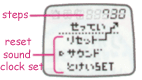Pressing the start button will display the setup screen as shown on the right.  Use the + button to select an option.<BR>
<FONT COLOR="#663399" SIZE=4>Reset</FONT><BR>
Press the A button to clear the steps count in the upper right hand corner. (This is useful when you want to know how many steps it takes to reach a destination)<BR>
<FONT COLOR="#663399" SIZE=4>Sound</FONT><BR>
Use the A button to toggle the sound on and off.   Use the B button to test the sound.<BR>
<FONT COLOR="#663399" SIZE=4>Clock Set</FONT><BR>
Press the A button to access the Clock Set screen.  Use the + button to adjust the time and the A button to set it.<BR><BR>
<CENTER></CENTER><BR>
<FONT COLOR="#FF9933">In Pocket Hello Kitty, you can use items to see Kitty in many different forms.  For example, the following items... <BR></FONT>
<TABLE WIDTH=500 ALIGN="center">
<TR><TD ROWSPAN=2><FONT COLOR="#009900">Ribbon</FONT><BR>
If you use the Ribbon item, Kitty will undergo a big fashion transformation.  Have fun finding all the different costumes Kitty can wear!<BR>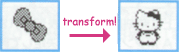</TD>
<TD><TABLE><TR><TD><FONT COLOR="#009900">Tennis Racket</FONT><BR>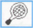</TD><TD>
Kitty loves sports!  Will you play tennis with her?!</TD></TR></TABLE></TD>
</TR><TR><TD><TABLE><TR><TD><FONT COLOR="#009900">Secret Item</FONT><BR></TD><TD>
There are some items are are hard to get.  Some items may look like other items, but do different things as well... </TD></TR></TABLE></TD>
</TR></TABLE>
</TD></TR></TABLE>
</BODY>
</HTML>
<HTML><BODY>
<CENTER>
<TABLE WIDTH=640 BACKGROUND="footer.gif">
<TR><TD HEIGHT=58><CENTER><A HREF="index.html"></A></TD></TR></TABLE>
</BODY></HTML>
